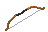
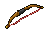

Tier-8 Ebony Longbow reference

Leaching Bow candidate

Native PNGActual 48 × 32 transparent sprites. Native size above, equal 10× nearest-neighbour zoom below. Reference colours use the client Ebony Longbow masks. Tier 8: Ebony Logs, 40 ranged offense, 54 Ranged requirement; 20% lifesteal remains. Gameplay correction is documented and pending, not deployed.


Native PNGBuilt-in imagegen: retain the Ebony Longbow's wood and shape; replace the string with two woven muted-red Bloodveld tongues. Full prompt. Exported by nearest-neighbour fitting and hard-alpha cleanup. No in-game assets changed.